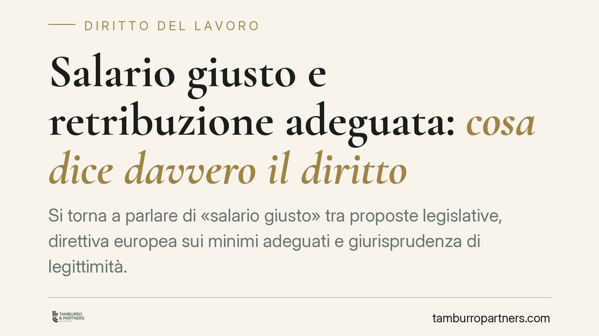
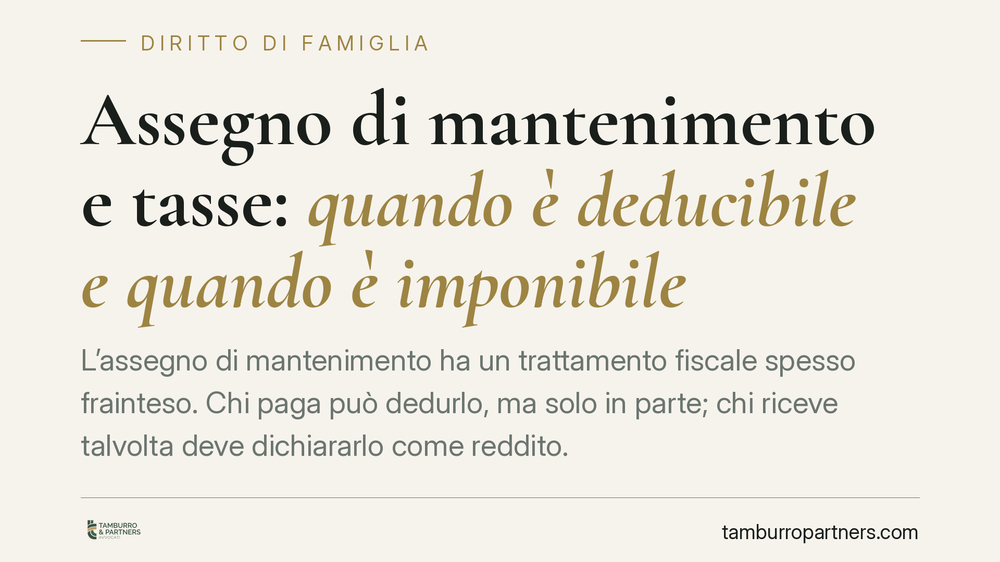
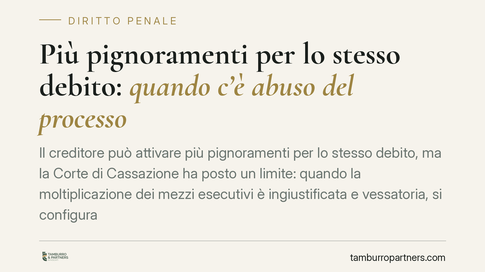
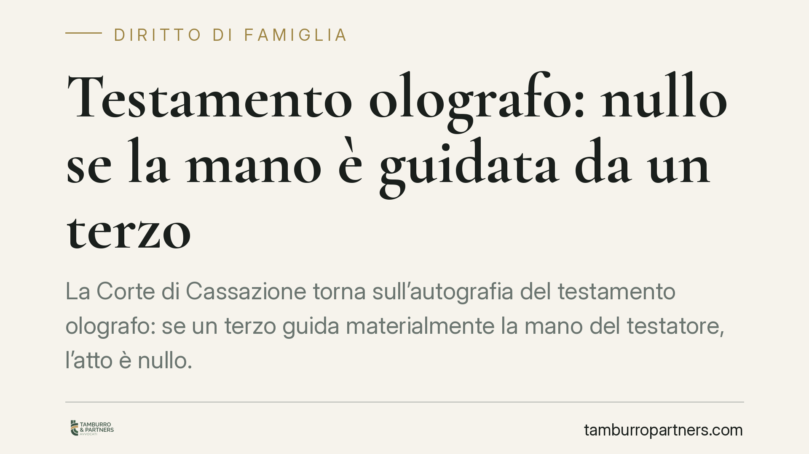
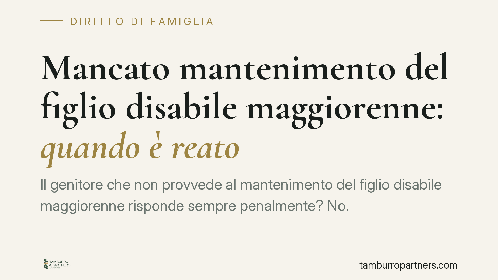
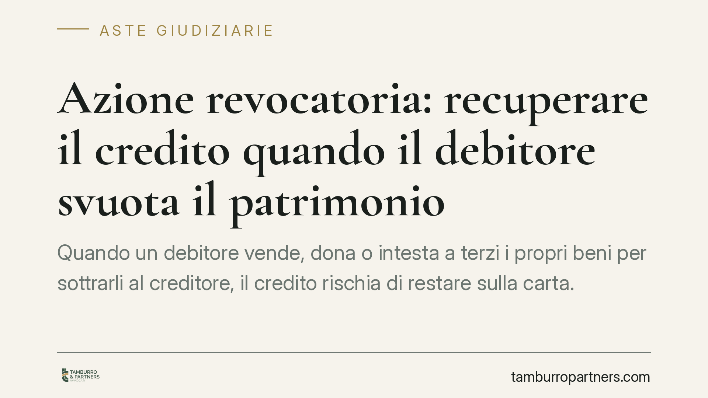
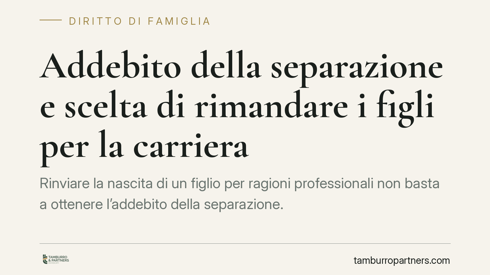

Vendere casa senza la firma del coniuge: quando è possibile
Chi vuole vendere l'abitazione senza il consenso del proprio coniuge si scontra spesso con il regime della comunione legale. La firma di uno solo può rendere l'atto annullabile, co…

Salario giusto e retribuzione adeguata: cosa dice davvero il diritto
Si torna a parlare di «salario giusto» tra proposte legislative, direttiva europea sui minimi adeguati e giurisprudenza di legittimità. Al di là delle etichette, il tema tecnico è …
Patteggiamento e innocenza: si può patteggiare senza confessare?
Molti imputati si chiedono se accettare il patteggiamento significhi ammettere la propria colpevolezza. La risposta è no: l'accordo sulla pena è una scelta processuale, non una con…
Accuse senza prove: si rischia davvero il processo?
Ricevere una denuncia infondata è un'esperienza frequente e destabilizzante. Ma un'accusa priva di riscontri non equivale a un processo, né tantomeno a una condanna. Il codice di p…

Assegno di mantenimento e tasse: quando è deducibile e quando è imponibile
L'assegno di mantenimento ha un trattamento fiscale spesso frainteso. Chi paga può dedurlo, ma solo in parte; chi riceve talvolta deve dichiararlo come reddito. La distinzione tra …

Più pignoramenti per lo stesso debito: quando c'è abuso del processo
Il creditore può attivare più pignoramenti per lo stesso debito, ma la Corte di Cassazione ha posto un limite: quando la moltiplicazione dei mezzi esecutivi è ingiustificata e vess…
Genitore separato e nuovo partner: quando può presentarlo ai figli
Dopo una separazione, il genitore che avvia una nuova relazione si chiede se e quando far conoscere il partner ai figli. La risposta è affermativa, ma condizionata dall'interesse d…

Testamento olografo: nullo se la mano è guidata da un terzo
La Corte di Cassazione torna sull'autografia del testamento olografo: se un terzo guida materialmente la mano del testatore, l'atto è nullo. Non conta che il contenuto rispecchi la…
Fondo patrimoniale e creditori: quando i beni sono protetti
Il fondo patrimoniale non è uno scudo automatico contro i creditori. L'art. 170 del codice civile limita l'aggredibilità dei beni solo a precise condizioni, che devono ricorrere in…

Mancato mantenimento del figlio disabile maggiorenne: quando è reato
Il genitore che non provvede al mantenimento del figlio disabile maggiorenne risponde sempre penalmente? No. Il diritto italiano distingue nettamente il piano civile dell'obbligo e…
Pensione di reversibilità al figlio maggiorenne studente: i requisiti
Il figlio maggiorenne che studia può percepire una quota della pensione di reversibilità del genitore, ma a condizioni precise: iscrizione a un corso universitario, limite di età e…
Addebito dopo la separazione consensuale: è possibile?
La scoperta di un tradimento dopo aver firmato una separazione consensuale porta molti a domandarsi se sia ancora possibile ottenere l'addebito. Di seguito si analizza perché la st…

Azione revocatoria: recuperare il credito quando il debitore svuota il patrimonio
Quando un debitore vende, dona o intesta a terzi i propri beni per sottrarli al creditore, il credito rischia di restare sulla carta. Il codice civile offre uno strumento preciso: …

Addebito della separazione e scelta di rimandare i figli per la carriera
Rinviare la nascita di un figlio per ragioni professionali non basta a ottenere l'addebito della separazione. Serve la violazione di un dovere coniugale e il nesso con l'intollerab…
Testamento olografo scritto sotto dettatura: valido o nullo?
Un testamento olografo redatto da persona anziana o malata solleva spesso un dubbio: è valido se qualcuno ha dettato il testo o ha guidato la mano di chi scriveva? La risposta dipe…

Testamento olografo falso: come si impugna e chi deve provare la falsità
Il dubbio sull'autenticità di un testamento olografo apre uno dei contenziosi successori più delicati. Contestare la provenienza della scheda non equivale a chiederne la nullità: l…

Testamento falso: quanto tempo hai per impugnarlo
Scoprire che un testamento olografo è falso apre uno scenario complesso: chi vuole contestarlo deve capire se agisce per nullità o per annullamento. La differenza non è formale, pe…

Casa in comunione legale e debiti di un coniuge: cosa rischia davvero
Se un solo coniuge contrae debiti personali, la casa in comunione legale non è automaticamente vendibile per intero all'asta. Il creditore particolare incontra limiti precisi: aggr…

Licenziamento illegittimo: quando spetta la reintegra e quanto si può ottenere
Non tutti i licenziamenti illegittimi si chiudono con la reintegra. La legge distingue in base alla gravità del vizio, alle dimensioni dell'azienda e alla data di assunzione. Capir…

Coltivare cannabis in casa: quando è reato e quando no
La coltivazione domestica di cannabis resta uno dei temi più controversi del diritto penale degli stupefacenti. Tra la sanzione amministrativa per l'uso personale e il reato di spa…

La casa comprata con i miei soldi resta solo mia?
Chi acquista un immobile con denaro proprio teme di doverlo condividere con il coniuge in caso di separazione. In regime di comunione dei beni, però, l'art. 179 del Codice civile p…

Licenziamento ritorsivo: la prova per indizi gravi e concordanti
Il licenziamento è nullo quando la vera ragione del recesso è una rappresaglia contro il lavoratore. La giurisprudenza consolidata ammette che questa natura ritorsiva possa emerger…

Casa intestata a un solo coniuge in comunione legale: quando è possibile
In comunione legale gli acquisti fatti durante il matrimonio ricadono di regola in comproprietà tra i coniugi. Esistono però eccezioni: alcuni immobili possono restare personali. C…

Truffa online e mancata consegna: quando scatta il reato
Pago, ma la merce non arriva. È truffa o semplice inadempimento? La distinzione non è teorica: cambia il rimedio, i termini e l'autorità cui rivolgersi. Il confine sta nel dolo ini…

Fideiussione e art. 1956 c.c.: quando il garante è liberato dai nuovi debiti
La fideiussione non è un impegno illimitato nel tempo. L'art. 1956 del Codice civile libera il garante quando il creditore, senza autorizzazione, concede nuovo credito a un debitor…

Violenza sul figlio gay: perché il Tribunale esclude i maltrattamenti in famiglia
Il Tribunale di Trieste ha condannato due genitori per lesioni e minacce nei confronti del figlio omosessuale, ma ha escluso il reato di maltrattamenti in famiglia. La ragione: man…

Anagrafe condominiale: come inserire i dati dell'inquilino
Chi affitta un immobile in condominio deve comunicare all'amministratore i dati dell'inquilino. È un obbligo introdotto dalla riforma del 2012, spesso trascurato, che tocca proprie…

Ordini di protezione: come difendersi dagli abusi in famiglia
La violenza domestica non è solo un fatto penale: il codice civile offre uno strumento rapido, l'ordine di protezione, per allontanare l'autore degli abusi dalla casa familiare. Ve…

Infortuni sul lavoro: quando risponde tutto il Consiglio di Amministrazione
Un infortunio in azienda non chiama in causa solo l'amministratore delegato. Secondo la Cassazione, in assenza di una delega di funzioni formalizzata, la responsabilità penale per …

Caduta dal letto senza spondine: quando la struttura sanitaria non risponde
Il Tribunale di Napoli ha escluso la responsabilità di una struttura sanitaria per la caduta di una paziente dal letto privo di spondine, ritenendo che la donna fosse vigile e auto…